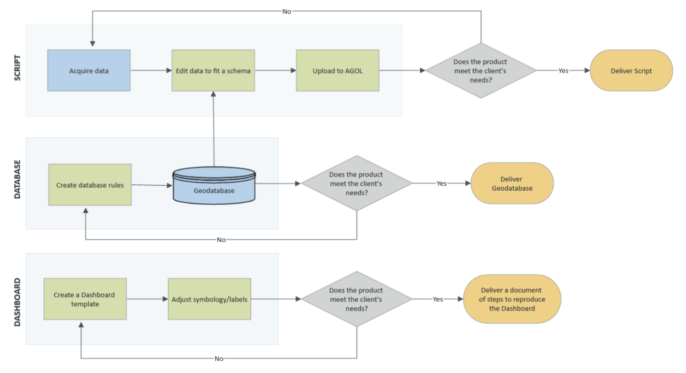

Methodology
Summary
The workflow followed during the implementation phase of the project is shown in the figure below. A script was created that processes the data using a combination of geoprocessing tools and database rules. The processed data was then uploaded to ArcGIS Online and used to create three different Dashboards, each corresponding to an environmental monitoring program at Kawartha Conservation. Once the Dashboards were created they were added to a StoryMap with corresponding background information. Kawartha Conservation will display this on their website, allowing the public to learn more about the Environmental Programs and interact with the data collected.
For a further look at the project Methodology, continue reading!
Project workflow diagram. Created with SmartDraw
Data Processing
Each Dashboard was processed to fit a particular schema. The Biomonitoring Dashboard used a conditional statement to classify wetlands into categories (excellent, good, etc.) depending on the concentrations of specific species of aquatic invertebrates. The Temperature Monitoring script queried and filtered out specific attributes. The PWQMN dataset was cleared of any errors that would cause issues when displayed on the Dashboard. Once the pre-processing was complete, the data was placed in a geodatabase, where specific database rules were applied.
Database Design
The client provided sample data along with a clear schema. The raw data was stored in an Excel file for automation and then loaded into a geodatabase. To improve data integrity, database rules were established based on the client's requirements.
First, all fields were given proper field names that are easy to understand, along with the proper data type. In order to add an attribute rule to the dataset, the GlobalIDs were generated first. Domains were also created to constrain the available values in the attributes for a table or feature class. For example, the Family Biotic Index by Category of the Biomonitoring Dashboard has the domain consisting of "Excellent", "Good", "Poor", "Fairly Poor" and "Very Poor". Calculation attribute rules were created to automate the category based on the values. For example, when the Family Biotic Index Value is 6.6, the Family Biotic Index Category will return "Poor" because the range of “Poor” is from 6.51 to 7.25. Feature that fails to follow the rules will result in an error feature and a window with error messages that will pop up in ArcGIS Pro. In addition, constraint attribute rules were also created to keep the input values to be in a valid range, for example, the valid range of Family Biotic Index is from 0 to 10. If a value entered is greater than 10 or smaller than 0, it will result in an error.
Programming
1. Data Processing
Each Dashboard was processed to fit a particular schema. The Biomonitoring Dashboard used a conditional statement to classify wetlands into categories (excellent, good, etc.) depending on the concentrations of specific species of aquatic invertebrates. The Temperature Monitoring script queried and filtered out specific attributes. The PWQMN dataset was cleared of any errors that would cause issues when displayed on the Dashboard. Once the pre-processing was complete, the data was placed in a geodatabase, where specific database rules were applied.
2. Upload to AGOL
To automate the sharing of layers to ArcGIS Online, the Stage Service geoprocessing tool was used to stage the service definition, and the Upload Service Definition geoprocessing tool was used to publish the web layer.
Visualization
Once the data was uploaded to ArcGIS Online, three interactive Esri Dashboards were created; Biomonitoring, Temperature Monitoring and Water Quality. During the creation of each Dashboard, a template was created to facilitate the team in ensuring that they are meeting the client's requirements. Upon the completion of a template, the team ensured that all the visualization needs were being met in order to ensure data is being communicated effectively allowing the client to communicate to the community. The team provided the client with the necessary documentation to reproduce and create Dashboards for the other Monitoring Programs in the future.
1. Create Dashboard Template
The Esri Dashboards created were a combination of a Tactical Dashboard highlighting historical data and trends for analysis and an Informational Dashboard helping the client engage the community by displaying the data in an engaging, easy to digest manner. Each Dashboard was created from a unique template which: featured the client's requirements for the Environmental Monitoring Program, told the story of that program, and communicated the information in a user friendly, intuitive platform. The Dashboards feature a combination of interactive graphs, maps and other information regarding the featured Environmental Program. Table 2 below features the three Environmental Monitoring Programs that were featured as Dashboards for this project and the client's requirements for each to display the data in a meaningful/impactful way.
2. Dashboard Visualization
Once the Dashboard templates were created the required symbology was applied to each to ensure the data was displayed to fit the client's requirements and in a meaningful and impactful way. Symbology was made easy for the community and users to understand by including simple symbols that represent the attributes being displayed/ highlighted in a meaningful manner. All cartographic symbology was created using ArcGIS ensuring consistency and simplistic cartographic outputs, therefore ensuring community usability and understanding.
3. Story Map
After the Dashboards were created and visualized in a cohesive manner, a Story Map was created using information about each EP and its corresponding Dashboard. The Story Map was created to follow criteria outlined by the client and visualization decisions were made to ensure the data was presented clearly and in an easy-to-understand manner for the end user - the general public.
4. Documentation
Upon completion of the Dashboard design, documentation of the steps involved in the creation of each Dashboard and the Story Map was delivered to the client ensuring the client can reproduce these elements in the future. This allows the replication of Dashboards for the other EPs that reflect the existing Dashboards and the update of the Story Map to fit the client's changing needs. The documentation also features any required information from the script and database workflows, and notes on the cartographic outputs in order for the client to replicate these in the future.